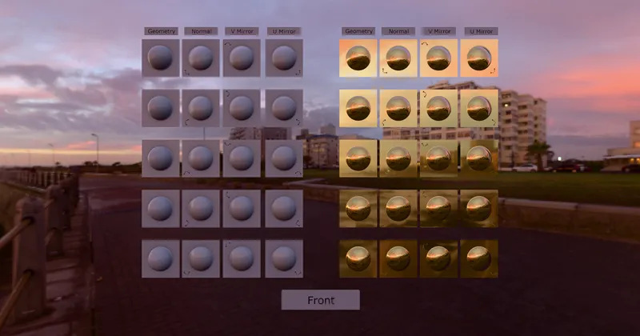

GLTF Basic
Normal Tangent Mirror Test - RedGPU WebGPU Example
Tests normal mapping handling with mirrored texture coordinates.
미러링된 텍스처 좌표에서의 노멀 맵핑 처리를 테스트합니다.

GLTF Basic
Tests normal mapping handling with mirrored texture coordinates.
미러링된 텍스처 좌표에서의 노멀 맵핑 처리를 테스트합니다.
